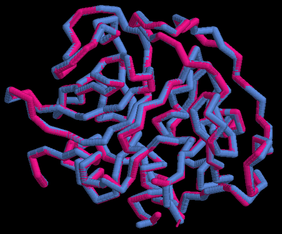
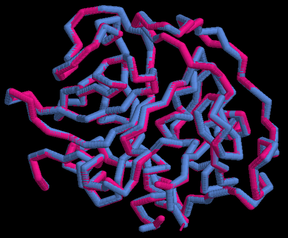

ALGORITMOS 3D
Pipeline:
La superfamilia de SCOPE seleccionada es:
Para asegurar que las secuencias coincidan hicimos un programa en perl, el cual extrae la secuencia del archivo .pdb y construye un archivo .fasta:
Cálculo de alineamientos pareados:
Cálculo de los alineamientos estructurales con mammoth (se tomaron las secuencias del alineamiento anterior).
prog3.1: para calcular el error (RMSD) de los alineamientos.
Resultados
1) Selecciona una superfamilia de proteínas de SCOP (http://scop.berkeley.edu) y extrae la secuencia de aminoácidos (ATOM records) y las coordenadas PDB de varios dominios de la misma. Podéis ver un ejemplo de dominio en http://goo.gl/8X4YvZ, y abajo están tanto la secuencia como una liga para descargar las coordenadas.
Proteínas seleccionadas:
2) Comprueba que las secuencias descargadas coinciden con las coordenadas.
Con los siguientes comando fue más fácil:
more “file_.pdb” | grep -v "REMARK" | grep -v "HEADER" | cut -c18-20 | uniq > seq_aa.txt
cat d2fjbb_.fa seq_aa.txt | less
Aunque al final terminamos haciendo un script de Perl (fa_constructor.pl) para extraer la secuencia del archivo de coordenadas y generar un archivo en formato fasta.
3) Calcula al menos dos alineamiento pareados entre secuencias de aminoácidos de las extraídas en 1 y calcula su %identidad como el total de parejas de residuos idénticas / total parejas alineadas.
Alineamos d1itoa_Btaurus contra los demás
4) Calcula con mammoth los alineamientos estructurales de los dominios que ya alineaste en 3 en base a su secuencia. Visualízalos con Rasmol como se explica en http://goo.gl/aOVdvp.
Entre d1itoa_Btaurus y d1atka_Hsapiens (identidad de 26%):
Comando: mammoth -p d1itoa_Btaurus.pdb -e d1atka_Hsapiens.pdb
Entre d1itoa_Btaurus y d1csb.1_Hsapiens (identidad de 89%):
Comando: mammoth -p d1itoa_Btaurus.pdb -e d1csb.1_Hsapiens.pdb
5) Compara los alineamientos obtenidos en 3 y 4. Comenta en qué elementos de estructura secundaria se observan diferencias.
1. d1itoa_Btaurus VS d1atka_Hsapiens:
Podemos observar que, teniendo una identidad del 26%, encontramos tres segmentos que alinean bastante bien en la parte media de la proteína; estos segmentos están separados por fragmentos cortos que divergen entre hélices y láminas. Vemos la mayor divergencia en medio de la proteína, aunque se conservan dos fragmentos muy cortos (SSS) en esta sección.
2. d1itoa_Btaurus VS d1csb.1_Hsapiens
Observamos que, con una identidad del 89%, encontramos que solo hay una divergencia de un par de estructuras cerca de cinco y 20 aminoácidos por la primera parte de la proteína y otras más 15-20 aminoácidos adentre en la parte final.
Como vemos, el grado de divergencia que esperábamos encontrar coincide con el porcentaje observado en cada una de las comparaciones.
6) Utiliza el prog3.1 (en http://goo.gl/UPtx76) para calcular el error (RMSD) de los alineamientos obtenidos en 3 y 4 y comenta los resultados, ¿son mejores o peores los alineamientos basados en secuencia desde el punto de vista del RMSD (comparación de estructura terciaria)?
d1itoa_Btaurus VS d1atka_Hsapiens (26% de identidad):
El resultado fue:
# Total residuos: pdb1 = 251; pdb2 = 215
# Total residuos alineados = 186
# Coordenadas originales = original.pdb
# superposicion optima-archivo PDB = align_fit.pdb
# RMSD = 9.93 Angstrom
d1itoa_Btaurus VS d1csb.1_Hsapiens (89% de identidad):
El resultado fue:
# Total residuos: pdb1 = 251; pdb2 = 252
# Total residuos alineados = 235
# Coordenadas originales = original.pdb
# superposicion optima-archivo PDB = align_fit.pdb
# RMSD = 4.93 Angstrom
En las siguientes figuras se muestran los alineamientos (.pdb) arrojados por prog3.1 de las dos comparaciones con d1itoa_Btaurus; es como hacer una intersección entre las tres proteínas. Aquí “enfocamos” los “loops” para hacer notar lo diferentes que son; mientras que en las partes centrales parecen coincidir entre las proteínas. Esto corresponde con los bloques observados entre el alineamiento de estructuras secundarias de d1itoa_Btaurus vs d1atka_Hsapiens, que son más lejanas.
Desde el punto de vista del RMSD se puede obtener la misma coherencia que los alineamientos basados en secuencia respecto al porcentaje de similitud. Sin embargo, encontramos que la desviación de la raíz cuadrada de la media de las posiciones atómicas (RMSD) es grande en comparación con la gráfica en Chothia & Lesk (1986). A grandes rasgos y tomando en cuenta todo lo anterior, nos queda claro “lo excepcional que es encontrar secuencias parecidas con grandes diferencias estructurales (Kosloff & Kolodny, 2008)”.